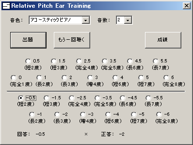

相対音感トレーニングソフト Relative Pitch Ear Training（rpetraining）
最終更新日：2011/4/13
出力される音の相対的な音の高さを当てることで相対音感をトレーニングするソフトです。耳コピの練習などに使用できます。

特徴
- 音の高さを当てるだけのシンプルな機能
- 半音単位で音の高さを区別して出題
- 何度でも聴き直しが可能
- 出力する音数を２から４まで設定可能
- 音色を変更可能
- 成績として、正答率、音の高さごとの正答数を表示
動作環境
Windows
Vista、7での動作は未確認ですが、おそらく動きます。
ダウンロード
インストール／アンインストール方法
【インストール方法】
ダウンロードした圧縮ファイルを任意のインストールしたい
フォルダに解凍してください。
【アンインストール方法】
インストールしたフォルダをフォルダごと削除してくださ
い。
使い方
【起動方法】
インストールしたフォルダから
「rpetraining.exe」を実行してください。
【出題】
[出題]ボタンをクリックしてください。スピーカーから音が鳴ります。
※音が鳴らない場合は、Windowsの
サウンドコントロールの設定で、SWシンセサイザ（SW Synth、MIDIなど）の音量とミュートがOFFになっていることを確認してください。
【回答】
[出題]ボタンを押した後、１番目になった音を基準にして、２番目以降になった音の、相対的な音の高さを、チェックボックスから選択してください。
音数を３以上に設定している場合は、２番目の音、３番目の音を順番に、チェックボックスから選択します。
回答するまでは、[もう一回聴く]ボタンをクリックするまで、何度でも聴き直しが可能です。
回答すると、画面下側の[回答：]の右に選択した内容が表示され、正解かどうかが、○×で表示されます。
また、[正答：]の右には、正解の音の高さが表示されます。
回答した後にも、次に[出題]を押すまでは、[もう一回聴く]ボタンを押すことで、間違った音を聴き直して確認ができます。
【音色の設定】
[音色]コンボボックスから、鳴らす音の音色を選択できます。
【音数の設定】
[音数]コンボボックスから、鳴らす音の数を２から４の間で設定できます。
【成績表示】
[成績]ボタンを押すと、起動してから出題／回答した問題の成績が表示されます。
正答率、音の高さごとの正解／誤りの数が確認できますので、苦手な音の高さが把握できます。
成績表示を閉じるには、右上の[×]ボタンを押してください。
【終了方法】
右上の[×]ボタンを押してください。
著作権/免責/注意事項
本ソフトウェアはフリーソフトですので、無料で使用できます。なお、著作権は作者に帰属します。
雑誌・ホームページ等への掲載、再配布時の連絡は不要です。
また、本ソフトウェアは使用した結果については、作者は一切責任を負えないためご了承ください。
サポート/連絡先
意見・要望・感想・バグ報告は掲示板で承ります。
更新履歴
ver 1.00
2011/4/13
初公開
トップページへ